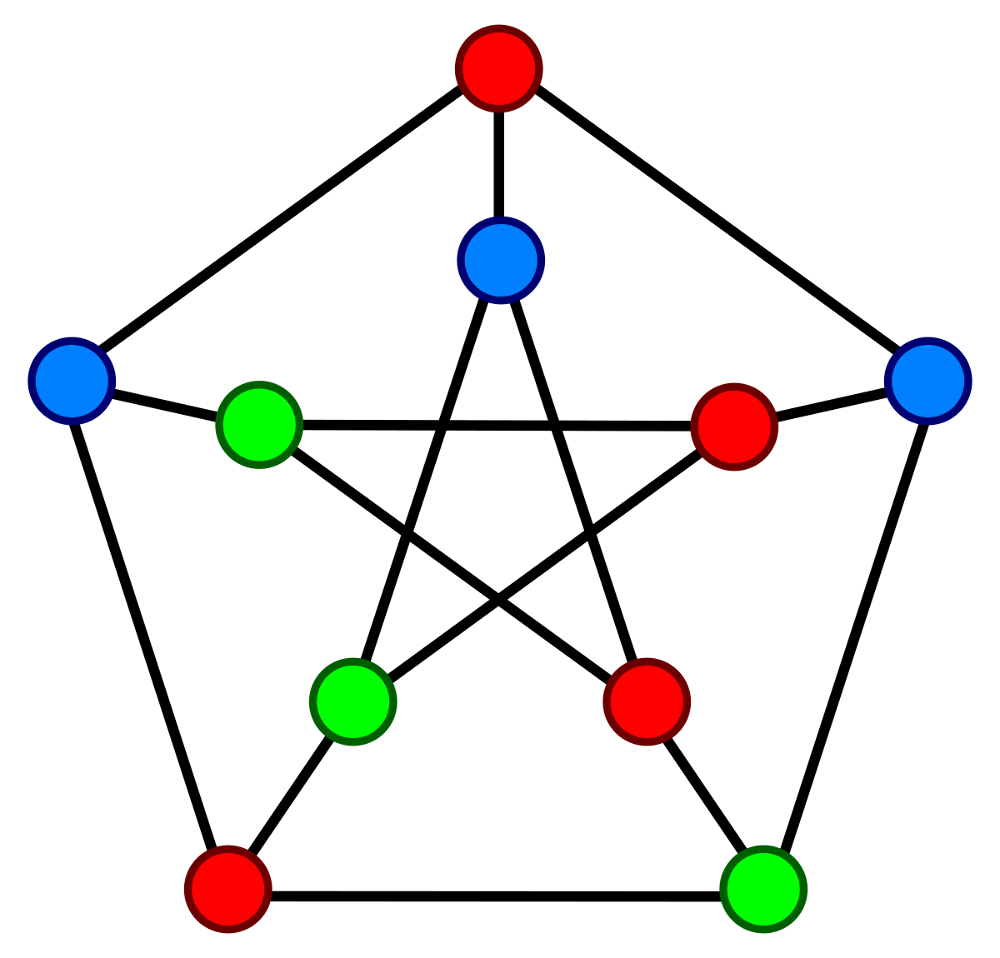

|  |
Coloreado de grafosEl problema de coloreado de grafos es un desafío fundamental en la teoría de grafos y la optimización combinatoria. El objetivo es asignar colores a los vértices de un grafo de manera que dos vértices adyacentes no tengan el mismo color. La idea principal es encontrar una asignación de colores que cumpla con esta restricción utilizando el menor número posible de colores. El coloreado de grafos tiene aplicaciones prácticas en diversos campos, como la asignación de horarios en instituciones educativas, la asignación de frecuencias en redes de comunicación, el diseño de mapas y la programación de tareas en la planificación de proyectos. Además, el problema es NP-completo, lo que significa que no se conoce ningún algoritmo eficiente que pueda resolver todas las instancias del problema en tiempo polinómico. El enfoque más común para resolver el problema de coloreado de grafos es mediante algoritmos heurísticos y metaheurísticos. Estos algoritmos buscan encontrar soluciones subóptimas utilizando estrategias inteligentes de búsqueda y optimización. Algunos ejemplos populares son el algoritmo greedy, que colorea los vértices en un orden determinado asignando el color disponible más bajo, y el algoritmo de búsqueda local, que mejora iterativamente una solución inicial intercambiando colores entre los vértices. Además de los métodos clásicos, el problema de coloreado de grafos también ha sido abordado utilizando técnicas de computación cuántica, como el uso de algoritmos de optimización cuántica y simuladores cuánticos. Estos enfoques aprovechan las propiedades de superposición y entrelazamiento de la computación cuántica para explorar el espacio de soluciones de manera más eficiente. En resumen, el problema de coloreado de grafos es un desafío importante en la teoría de grafos y la optimización combinatoria, con aplicaciones prácticas en diversos campos. Aunque no existen algoritmos eficientes para resolverlo en tiempo polinómico, se han desarrollado enfoques heurísticos y metaheurísticos, así como técnicas de computación cuántica, para abordar el problema y encontrar soluciones subóptimas. |